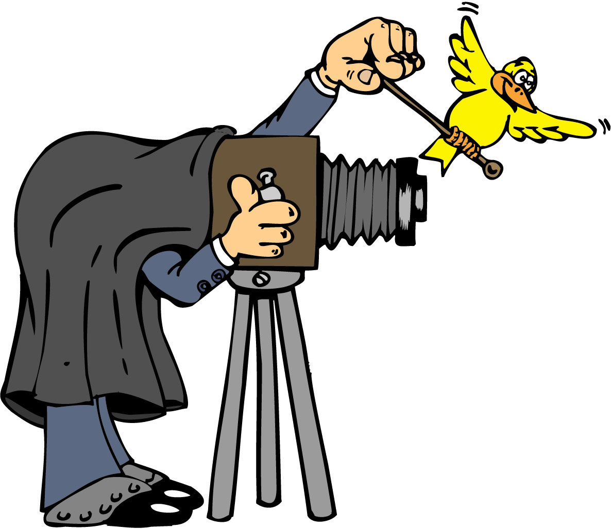
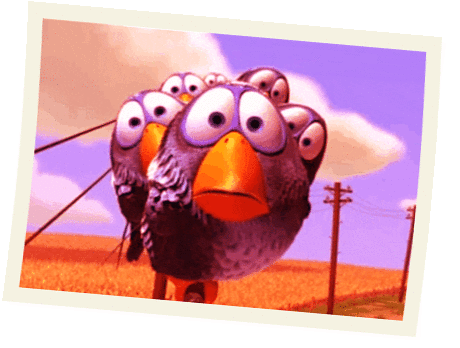

Olha o passarinho!
 Seja bem vindo!
Numa ilha isolada no arquipélago de Galápagos, o famoso fotógrafo de animais exóticos Adam Joseph tem uma missão muito importante: criar registros de uma família de Bluebirds.
Porém, são raros os momentos em que todos os integrantes estão no mesmo ambiente, dificultanto o trabalho desse tão experiente fotógrafo. Ele vai precisar de muita ajuda, já que sozinho não está conseguindo êxito em seu projeto.
O objetivo é tirar o maior número de fotos enquanto a família de Blubirds encontra-se reunida.